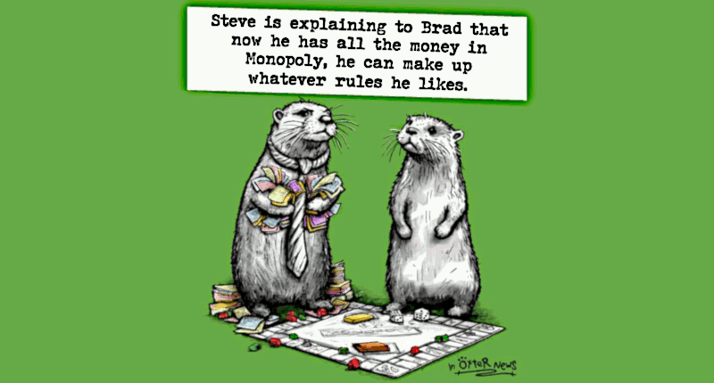
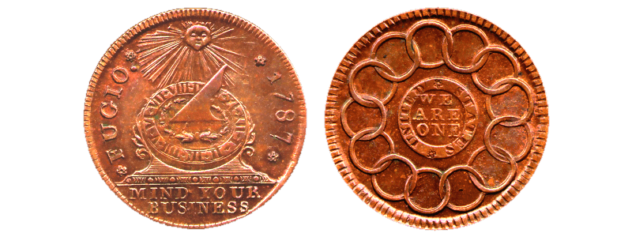

The paper money is financial communism
Published Jul 31, 2024 - origin LinkedIn - translate [IT] [DE] [FR] [ES]
Introduction
Communism is the ideology for which taking away from their owners the means of production is a good thing because a collective management could better address the surplus of production. History and games theory demonstrates that ideas are doomed to fail and, moreover, to bring people more suffering, more poverty and less freedom.
Unfortunately, proletarian communism (by
Karl Marx) is not the only form of communism but there are many other ways to implement the same ideology with the same disastrous outcome. One of them is financial communism and surprisingly is what is going on in the Western. Thus, we need to understand how it works.
From the gold to the fiat-currency
Those printing paper money are communists not socialists: financial communists instead of proletarian communist but it is the same way of thinking - stealing people to centralize the control of the wealth thus imposing their will over them.
Why are they financial communists? It is quite simple to explain. Because gold is quite difficult to manage and trade. Who grants me that the piece of gold is pure gold? Who grants that your sling-bar scale is precise?
Thus, the coin with a facial value - the "
facial" came from who put their face on it to grant the value (the emperor, the king, the pope, etc.) - and people accept the facial value despite the ruler might trick them with the coin metals.
The difference between the nominal value and the value of metals in the coin is called "
functional value gap". People accepted to be tricked because it is easier to trade with standard coins rather than exchange goods. How much are they keen to be tricked?
At this point they are keen to use banknotes (or certificates) that are granted to be exchanged in gold, possibly. Possibly as long as everyone asks for changing it with gold, naturally. Then the fiat-currency appears.
From fiat-currency to quantitative easing
Then the fiat-currency appears and because it is a scam, the scam is perpetrated by private institutions. It would be unacceptable that a public authority would carry on a scam.
They did, they have been caught and they have been forced to give away that scam in favor of those carried on with it but cleaning their reputation.
Now, a private institution cannot print money and use it. The scam would be too easy to be revealed and it would end pretty soon. So, they wait for corrupted politicians and lobbyists to decide to use more paper money and thus they put on the market bonds.
The state bonds - in USA federal state bonds - is like asking people to trust in their government and give them more resources. This authorities the government to increase the taxation pressure, in percentage or in number of the taxes.
It is a vicious cycle which brings politics more and more dependent from increasing their budget, thus public debt, thus tax pressure. In the same way, lobbyists and banks go for the same way because whoever stops is dead (default).
Here we are, with quantitative easing. A monetary policy that progressively increases the primary monetary mass (M1), thus the secondary (M2) - usually 50x bigger than M1 - and the M3, also.
From the quantitative easing to the ww3
The M2 are loans and usually are secured unless subprime loans became a thing. The M3 is everything else generated by any other kind of financial leverages.
In one way or another, M3 is the speculative betting volume. A lot of complications masquerade such mechanism but in the essence is quite easy:
M1 - public debt
M2 - loans (50x)
M3 - bets (unlimited, virtually)
Now consider that M1 is a huge number multiplied two times for 50 thus M1 x 2.500 is an immense amount of paper money (assets securitisation) that has little of counterpart granted in real world.
It is like selling the same gold bar multiple times to multiple people. Everyone has a certificate of deposit and pays a fee over that but they suppose to gain by the gold value raising. The day that too many people want their gold bar back, the system collapses.
In the monetary-financial system, it does not even exist the gold bar to grant the paper money but the big-red-button. Do not dare to oppose to us because we can destroy the world with our nuclear bombs.
Notes about the terminology
Because words matter, we are going to spend a few minutes in understating their real meaning in order to understand how financial communism derives from a dystopic use of quantitative easing and public debt inflation.
Notice that "
assets securitisation" is translated in Italian as "
cartolarizzazione delle attività" which literally means "
makes paper from your activities" where "
activities" means anything that has a positive outcome, the opposite of a debt but broader as an idea than a credit.
Notice that communism can exist only in an economic system that has a lot of productive means and those means are capable of providing a production surplus.
Because underdeveloped poor economies are based on solidarity: no fridge, we store food in our guts.
Notice that economy, etymologically, came from two Greek words
οἰκονομία (house) and
οἶκος (administration) because it was about the house administration, literally. Its meaning is strictly related to scarcity and its proper administration.
Economics: the scarcity and its administration
Thus, when there is no scarcity, there is no economy. In fact, no scarcity, no moderation in using something that is unlimited. Time is for its intrinsic nature a scarcity good. Once you have lost your time, it will not return back.
So, we can consider an asset like a factory or a farm. This is also an activity because it produces more economic (real) value than how much it consumes (e.g. grass into milk).
We can make a securitisation of that asset: we go to the authority, we claim that we own that farm and the authority after some checks, release us a certificate of property plus they register our name into their property registry in such a way anyone else cannot claim our farm for its own.
From securitisation to cartolarisation
This securitisation is also a cartolarisation (paperwork) and we can go into another city and sell our property but instead of bringing the new owner to our farm, we just give the ownership paperwork with a transfer contract. It is a great idea, securitisation!
Unfortunately cartolarisation (paperwork) can also create HUGE problems. Imagine that you go to the authority office and ask for many ownership certificates and you pay $1 for each. Then you start to travel along toward the far-wet and in each city you go, you sell your farm for $100.
Do you see the problem? This is a scam but it can be even worse when the scam is carried on by a systemic scale and becomes the norm. Like, everyone that paid $100 had printed them. Not by themselves in person but thanks to a bank giving YOUR farm as collateral to the debt.
Now there is a lot of money around and this kind of scam can grow bigger and faster because more money is more expensive than real assets costs. Which is inflation, precisely.
Inflation is not production. The surplus value (added value) is just related to numbers which are unlimited not about real think that are naturally scarce like the gallons of milks that a cow can produce.
From capitalism to the financial communism
The securitisation of a real-world asset is about capitalism, about the natural right of the owner to leverage their propriety for their own good sake. However, not completely at their own will in order to avoid damage to others.
So, step by step, it happens that now we have (1) fiat-currency, (2) quantitative easing policy enforced for many years in order to (3) inflate the total {M1, M2, M3} monetary mass and (4) lot of productive means.
Hence, financial communism can start. Well, it started a long time ago but now they should not have to conceal themselves behind tricks. In fact, ex CIA directors started to admit publicly that they did many nasty things around the world. The Nobel prize goes to the US president that keeps alive most wars that anyone else. And so on and on and on.
Because, at this point they have enough money to buy anything they want. A brilliant founder raised up an ethical business, taking care of employees who take care of their customers. A business that nicely works with those providing goods to the company and with the company are carefully involved in nature preservation.
How financial communism works
Imagine a company - like the original
Olivetti company - innovative, social caring, successful, and everyone loves them, buying from them, working for them or selling to them - then someone arrives and puts a pile of paper money up-up until the owner sells his company.
But the owner does not want to sell that company because everyone loves it and also s/he loves it. Then a pile of money, up and up, is offered to everyone that can convince the founder/owner to sell its lovable creature.
As much in nominal value as the paper money pile grows up, more people get interested in this "
deal". It is not their own business, but now it shows a kind of on which they can win something for themselves.
Financial communism can kill
As much in nominal value as the paper money pile grows, stronger grows the pressure on the founder/owner to sell the company but s/he is hard to beat and s/he remains firmly rooted on the "
no selling" option.
S/he finally dies in a tragic and strange incident, the first engineer, the wo/man that could have replaced the owner and carried on the company as it was supposed to be, s/he also dies or gets seriously ill or both.
Finally, the company is sold or made irrelevant. Finally, the paper money defrauded the owner from his own propriety and in doing this that means of production gets under the control of the paper money issuers (those prints paper money).
Financial communism is true communism.
Even if it leverages financial instruments instead of ideology.
Wait, the current economic and financial system isn't based on wrong and obsolete assumptions that are kept enforced as dogmas? Yes!
Yes, also financial communism is based on some kind of ideology which is nothing else than a structure of ideas based on some dogmas that cannot be challenged and thus are enforced.
Those who are against financial communism are proletarian communists. Or simply communists. It sounds like a satiric and absurd sketch by Monty Python but that's it, it is real!
Hence, a bounce of people that enforced over others some dogmas throughout the scam of paper money got the control (or made irrelevant) the right of the founder/owner of a productive means.
Financial communism outcome is the same, also
They stole it. No more, no less, but simply as that: they stole it (or destroyed it).
In both cases they enforced their will over the productive means that are providing a surplus and negated the owners natural right to HAVE and CONTROL those productive means. Communism!
Every kind of currency that can be issued in an unlimited amount - soon or later - will develop financial capitalism. They pretty clearly know this. It is wrong to suppose that they did not know this.
Despite this and because of this, they claim to fight communism, even better if it requires printing more money. Which is exactly what happened after Breton Wood, after 9/11 and Ukraine crisis aka WW3 event ignition.
Conclusions
Please feel free to reach your own conclusion about this reading.
Bonus, the Fugio cent
The Fugio cent, also known as the Franklin cent, is the first official circulation coin of the United States. Consisting of 0.36 oz (10 g) of copper and minted dated 1787, by some accounts it was designed by Benjamin Franklin. - Wikipedia

In the original Benjamin Franklin draft two mottoes was impressed on the coin:
MIND YOUR BUSINESS
WE ARE ONE
It is reasonable to think that the word "
business" was intended literally here, as Franklin was an influential and successful businessman. Lately these mottoes were changed in:
IN GOD WE TRUST
E PLURIBUS UNUM
The change of the first motto is quite relevant because it moves the focus from the pragmatic approach to practical things like "
trust in yourself" or "
work hard to succeed" to something that can be read as "
good luck matters" or "
hope rather than preparation".
Also the change of the second motto is quite relevant because it moves from a plain English written concept that everyone can understand to a Latin motto which means almost the same in origin - out of many, one - or in the Cicero's paraphrase of Pythagoras "
unum fiat ex pluribus" which means that society is created from the union of many (the People).
The Franklin original version is pure U.S. history while the changes are from Europe, clearly.
However, "
we are one" is not a concept exclusively European. The same concept has been expressed in many other places, in many different ages and from different cultures. In particular the Sud-African tribes "
Ubuntu" concept is quite similar in the meaning just. In particular because the cultural gap, sometimes, is so wide that it is difficult to grab all the nuances in the meaning.
Lately, in the post U.S. civil war era, the symbolism clearly evolves towards a kind of mix made of Roman Empire signs and Free-Masonry mottoes or beliefs. Showing quite a contamination compared to the pragmatic and practical culture of those who were colonial people.
Related articles
Valutazione di un nuovo modello monetario (2024-11-26)
La libertà d'informazione è fondamentale - origin LinkedIn (2024-06-26)
La guerra del dollaro contro l'euro (2024-05-18)
Steve Jobs era un socialista - origin LinkedIn (2024-04-27)
Proprietà Privata vs Social Score - origin LinkedIn (2024-04-14)
The ubuntu society: pros vs cons - origin LinkedIn (2023-10-06)
The great confusion about socialism - origin LinkedIn (2023-05-11)
Share alike
© 2024, Roberto A. Foglietta <roberto.foglietta@gmail.com>, CC BY-NC-ND 4.0